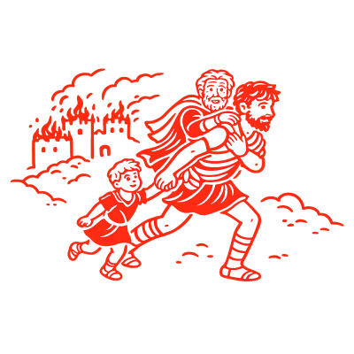
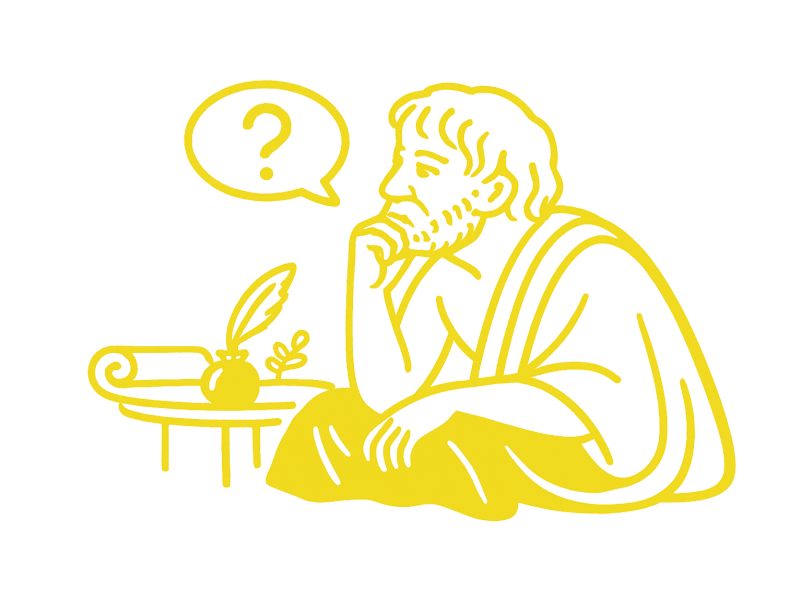

S.O. Groenhove Waregem
Latijn 3de graad
Kies het jaar om verder te gaan.

5de jaar
Grammatica, teksten, vocabularium en oefeningen.
›

6de jaar
Grammatica, teksten, vocabularium en oefeningen.
›
J. Everaerdt — S.O. Groenhove Waregem campus Atheneum